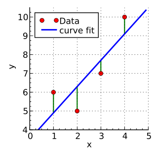

線性迴歸
進入模型的世界
2018.03.05
杜岳華
Outline
- 資料之間的關係
- Contingency table
- Scatter plot（散佈圖）
- Least square problem and linear regression
- 統計觀點
- 線性代數觀點
- 最佳化觀點
- Multivariate linear regression
- 更多迴歸模型
統計！然後呢？
我們上次講了統計會關心：
- 集中趨勢
- 離散趨勢
統計想要解的問題不僅止於看資料的趨勢！
- 資料（變數）之間的關係
變數之間的關係
問題：我們好奇左撇子跟右撇子的人數，在男生跟女生中有沒有差別？
隨機變數：
X ： 慣用手，{左撇子, 右撇子}Y ： 性別，{男生, 女生}
假設
Independent and identically distributed
- Identically distributed
- 樣本是從同一個母體來的
- Independent
- 樣本之間互相獨立
假設
Raw data
| ID | 地址 | 性別 | 慣用手 |
|---|---|---|---|
| 001 | ~~ | 男生 | 右撇子 |
| 002 | ~~ | 男生 | 左撇子 |
| 003 | ~~ | 女生 | 右撇子 |
| ... |
Contingency table
| 慣用手\性別 | 男生 | 女生 | Total |
|---|---|---|---|
| 右撇子 | 43 | 44 | 87 |
| 左撇子 | 9 | 4 | 13 |
| Total | 52 | 48 | 100 |
hypothesis test:
Joint probability distribution
After normalized...
| 慣用手\性別 | 男生 | 女生 | Total |
|---|---|---|---|
| 右撇子 | 0.43 | 0.44 | 0.87 |
| 左撇子 | 0.09 | 0.04 | 0.13 |
| Total | 0.52 | 0.48 | 1.00 |
Joint probability distribution
quiz
P(X=左撇子,Y=男生)=?
Marginal probability distribution
| 慣用手\性別 | 男生 | 女生 | Total |
|---|---|---|---|
| 右撇子 | ---- | ---- | 0.87 |
| 左撇子 | ---- | ---- | 0.13 |
| Total | 0.52 | 0.48 | 1.00 |
Marginal probability distribution
Marginal probability distribution
P(X=右撇子)=0.87 P(X=左撇子)=0.13 P(Y=男生)=0.52 P(Y=女生)=0.48
Raw data
| ID | 地址 | 身高 | 體重 |
|---|---|---|---|
| 001 | ~~ | 167 | 65 |
| 002 | ~~ | 187 | 80 |
| 003 | ~~ | 159 | 75 |
| ... |
Scatter plot

變數之間的關係是什麼？
我們看看資料！
線性關係
材料
- data: {(
x1 ,y1 ), (x2 ,y2 ) ...} Y=aX+b
Least square problem

Least square problem
- Residuals:
y^−y axi+b−yi
- Sum of residuals:
∑i(y^−yi) - Sum of square:
∑i(y^−yi)2 ∑i(axi+b−yi)2
Linear regression
Least square:
Linear regression:
argmina,b ∑i(axi+b−yi)2
統計觀點

隱藏假設：Gaussian error
統計觀點

隱藏假設：Constant variance (homoscedasticity）
線性代數
線性代數
線性代數
向量表示： w=[ab] , y=wTx
線性代數觀點
因為資料有noise，點都不在同一平面上，
那怎麼辦？
線性代數觀點

那就投影吧！
線性代數觀點
找到一個共同的平面，讓點投影上去，點到面的距離最小
線性代數觀點

要讓
線性代數觀點
最佳化觀點
最佳化觀點

最佳化觀點

正確來說應該是長這樣...
最佳化觀點
要求a, b分別是多少的時候，
微積分告訴我們，極值存在的地方，他的一階微分是0
也就是
∂f(a,b)∂a=0,∂f(a,b)∂b=0
最佳化觀點
最佳化觀點
Multivariate linear regression

更多迴歸模型
- Ridge regression
- LASSO regression
- Polynomial regression
- Kernel regression
- Isotonic regression
- Robust regression
- Poisson regression
Thank you for attention.
Q&A
28
線性代數觀點
那就投影吧！